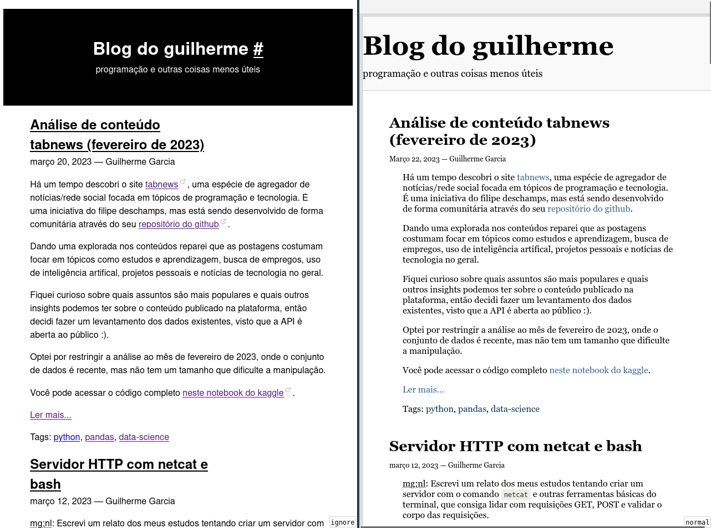

Setembro 20, 2023 —
Guilherme Garcia
mg;nl: entrei num buraco de minhoca tentando enviar uma resposta envolvendo modificar listas in place no LeetCode. Aqui relato a diferença entre um assignment usando = e um slice assignment quando se trata de sobrescrever listas.
Post originalmente escrito pro fórum do matehackers em 06/09/2023.
Ler mais...
Tags: python, algorithms
Julho 04, 2023 —
Guilherme Garcia
Esse post tem um levantamento sobre alguns valores usados no arquivo de configuração do nginx, que geralmente são copiados e colados de um lado pro outro sem muita reflexão:
- server_name
- try_file
- fastcgi_pass
- fastcgi_param
Ler mais...
Tags: nginx, php
março 24, 2023 —
Guilherme Garcia
mg;nl: neste post trago um levantamento das alterações que fiz no css e html do blog pra deixá-lo mais acessível e legível.
O objetivo principal de um blog é disponibilizar texto escrito. Faz sentido que o layout dele seja otimizado pra leitura, assim como num livro.
A internet, porém, costuma aproximar os blogs mais da ideia de uma revista, onde o conteúdo escrito é permeado de anúncios e precisa competir com distrações como links externos e CTAs tentando puxar sua atenção para atividades mais "rentáveis".
Um dos meus objetivos com esse blog é mantê-lo o mais direto ao ponto possível, pra que os leitores consigam extrair as informações e ir embora, sem nenhum passo intermediário.
Pensando nisso fiz algumas mudanças no css utilizado e na disposição do conteúdo, na busca de aumentar a legibilidade e acessibilidade do blog.

Mapeei os seguintes problemas com o layout antigo:
- HTML não semântico (usando
divs em tudo!).
- Espaçamento entre linhas apertado.
- Má disposição do conteúdo (pouco aproveitamento do espaço de tela).
- CSS quebrando normas de acessibilidade.
Junto com alguns apontamentos que encontrei no search console do google quanto à usabilidade do blog em dispositivos mobile:
- Fonte muito pequena.
- Elementos clicáveis muito próximos.
- Conteúdo mais largo que a tela.
Abaixo eu explico as alterações realizadas e como elas resolvem os problemas listados.
Ler mais...
Tags: acessibilidade
março 22, 2023 —
Guilherme Garcia
Há um tempo descobri o site tabnews, uma espécie de agregador de notícias/rede social focada em tópicos de programação e tecnologia. É uma iniciativa do filipe deschamps, mas está sendo desenvolvido de forma comunitária através do seu repositório do github.
Dando uma explorada nos conteúdos reparei que as postagens costumam focar em tópicos como estudos e aprendizagem, busca de empregos, uso de inteligência artifical, projetos pessoais e notícias de tecnologia no geral.
Fiquei curioso sobre quais assuntos são mais populares e quais outros insights podemos ter sobre o conteúdo publicado na plataforma, então decidi fazer um levantamento dos dados existentes, visto que a API é aberta ao público :).
Optei por restringir a análise ao mês de fevereiro de 2023, onde o conjunto de dados é recente, mas não tem um tamanho que dificulte a manipulação.
Você pode acessar o código completo neste notebook do kaggle.
Ler mais...
Tags: python, pandas, data-science
março 12, 2023 —
Guilherme Garcia
mg;nl: Escrevi um relato dos meus estudos tentando criar um servidor com o comando netcat e outras ferramentas básicas do terminal, que consiga lidar com requisições GET, POST e validar o corpo das requisições.
Como parte de um projeto de fim de semana, precisei criar um servidor HTTP. Como estou estudando o uso da linha de comandos e scripts em bash, achei digno tentar criar um servidor que processasse o protocolo http "do zero" usando ferramentas básicas do terminal, como netcat, read, mkfifo, sed, cut e outros.
Dei uma pesquisada e achei projetos bem avançados, como o totally simple web server, mas nenhum deles tinha suporte para requisições POST, para envio de informações mais complexas.
Decidi por fazer minha implementação com o seguinte escopo:
- O servidor deve processar HTTP na versão 1.1.
- O servidor deve lidar com requisições GET e POST, e deve ser estensível para outros verbos http (PUT, PATCH, DELETE...) sem muita alteração na lógica.
- O servidor deve ser capaz de processar o corpo das requisições e retornar respostas dinâmicas, com regra de negócio customizável.
Como prova de conceito, implementei um endpoint GET que retorna um status de sucesso e um endpoint POST que recebe uma URL e verifica se ela é um link válido.
Você pode ver o código completo neste gist.
Ler mais...
Tags: bash, http
março 04, 2023 —
Guilherme Garcia
Eu adoro quando vou fazer algo que é pra ser simples e acabo saindo horrorizado com as possibilidades.
O vim é o melhor exemplo de algo que pode ser customizado de tantos jeitos, que 90% das soluções pra qualquer problema envolvem scripts bizarros e key maps alienígenas, que funcionam pra pessoas específicas (a pessoa que inventou, no momento em que inventou, com a chance de funcionar diminuindo pra ela mesma em função do tempo) e falham para todo o resto de forma desastrosa.
Tópico de hoje: tabs. Especificamente, como criar, fechar, criar uma tab a partir de um buffer e gasp mesclar duas tabs em um só buffer.
Ler mais...
Tags: vim
fevereiro 26, 2023 —
Guilherme Garcia
Open source é uma faca de dois gumes: você libera seu código fonte pro mundo, e todos podem inspecionar, aprender e interagir com a sua criação.
Isso cria uma expectativa nos usuários, a ideia de que você deve dar suporte pra correção de bugs, implementação de novas funcionalidades, e manter seu software atualizado e seguro.
Mas isso não é verdade: subir um projeto no github com uma licensa aberta, criar uma documentação boa e mesmo colocar um guideline pra contribuição não criam nenhum vínculo de responsabilidade.
O criador de um projeto aberto não é obrigado a nada.
Feature creep é um conceito que costuma ser utilizado nesses casos, quando um produto tem uma diversidade muito grande de usuários, e o criador acaba tentando espandir suas funcionalidades pra suprir cada uso-caso individual.
Muito pior, porém, é a responsability creep, que costuma acontecer em situações de empregador-empregado, onde uma pessoa eficiente no que faz acaba sempre recebendo mais e mais demandas.
No ambiente corporativo, a saída é relativamente direta: se você ganhou mais responsabilidades, exija um aumento.
E no open source? Ninguém pode te impedir de ser um otário, mas se você notar que os mantenedores do projeto não estão resolvendo o seu problema, siga os 3 Fs: fix it, fork it or fuck off.
Em projetos menores esse comportamento ocorre em sua melhor forma: a pessoa pedindo alteração geralmente propõe a solução com um pull request.
Então, se você acompanha algum projeto que foi abandonado, e se viu precisando de alguma alteração, que tal criar um fork?
Tags: open-source, git, github
fevereiro 23, 2023 —
Guilherme Garcia
Este post explica como configurar o uso de git submodules em pipelines de CI/CD no Azure DevOps.
Em específico, como configurar quando os submódulos fazem parte do mesmo projeto.
A solução envolve habilitar o "Checkout submodules" pelo painel do Azure, utilizar URLs relativas no arquivo .gitmodules e adicionar uma chave "resources" no arquivo .yaml da sua pipeline.
Ler mais...
Tags: azure, git, ci